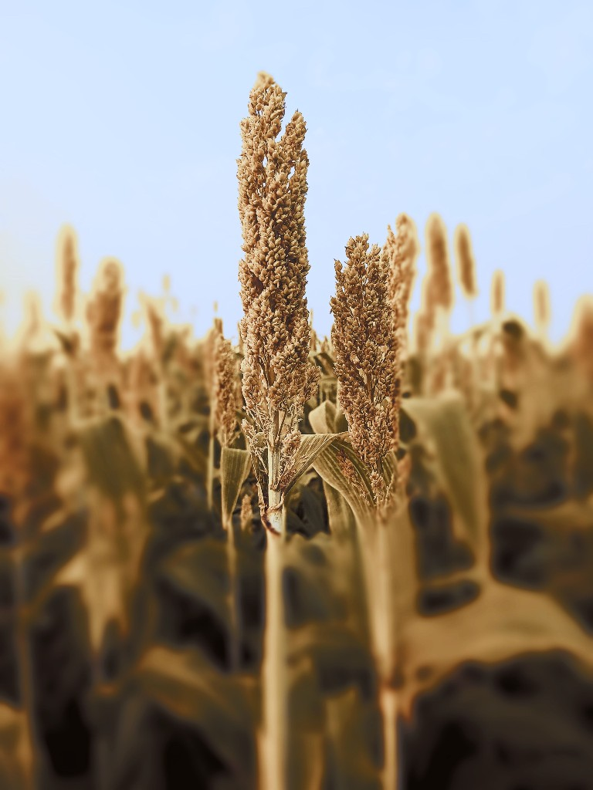

Sorghum (Sorghum bicolor)
First Cultivated: ~4000 BCE
Optimal Climate: Semi-arid tropical to subtropical
Water Requirement: 12 to 20 inches annually
Sorghum was domesticated in northeastern Africa and remains a cornerstone cereal of the Sahel and savanna zones. Its deep roots and drought tolerance support harvests where maize often fails. Grain is milled for porridge, flatbreads, and fermented beverages across Sub-Saharan Africa.